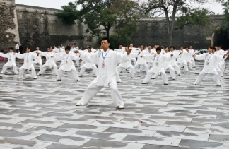

| 中文名 | 太极拳 |
| 批准时间 | 2006年 |
| 非遗级别 | 人类非遗 |
| 申报地区 | 河北省永年县、河南省焦作市 |
| 遗产类别 | 杂技与竞技 |
| 代表人物 | 施承志、陈正雷、杨振铎、李秉慈、孙婉容等 |
太极拳简介

太极拳，是以中国传统儒、道哲学中的太极、阴阳辩证理念为核心思想，集颐养性情、强身健体、技击对抗等多种功能为一体，结合易学的阴阳五行之变化，中医经络学，古代的导引术和吐纳术形成的一种内外兼修、柔和、缓慢、轻灵、刚柔相济的中国传统拳术。
1949年后，被国家体委统一改编作为强身健体之体操运动、表演、体育比赛用途。中国改革开放后，部分还原本来面貌；从而再分为比武用的太极拳、体操运动用的太极操和太极推手。
传统太极拳门派众多，常见的太极拳流派有陈氏、杨氏、武氏、吴氏、孙氏、和氏等派别，各派既有传承关系，相互借鉴，也各有自己的特点，呈百花齐放之态。2020年12月，太极拳列入联合国教科文组织人类非物质文化遗产代表作名录。